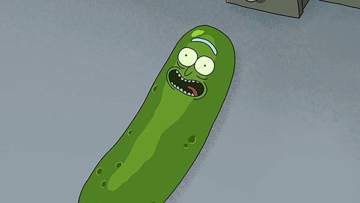

Rick and Morty é uma série sensacional, e isso pouca gente pode discorda. Contudo, essa insana animação está sendo reconhecida por premiações famosas, como é o caso da 70ª edição do Emmy, prêmio dos Estados Unidos que reconhece as melhores produções feitas para a TV.
Confira os detalhes dessa premiação:
Melhor série animada

O episódio da série que fez com que ganhassem o prêmio foi Pickle Rick, da terceira temporada. Nesse episódio, Rick usa toda a sua genialidade para se transformar em um picles e assim não ter que comparecer à sessão de terapia familiar. Contudo, as coisas saem fora de controle.
Rick and Morty venceu outras séries já renomadas e premiadas anteriormente em outras edições do Emmy, como Os Simpsons e South Park. Essa foi a primeira vez que Rick and Morty é nomeada ao prêmio, o que resultou na sua primeira vitória.
A 70ª edição do Emmy ocorreu na segunda-feira, dia 17 de setembro de 2018.